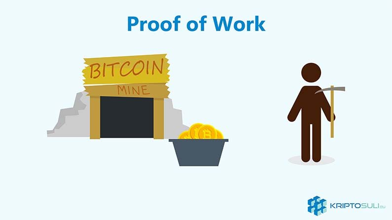
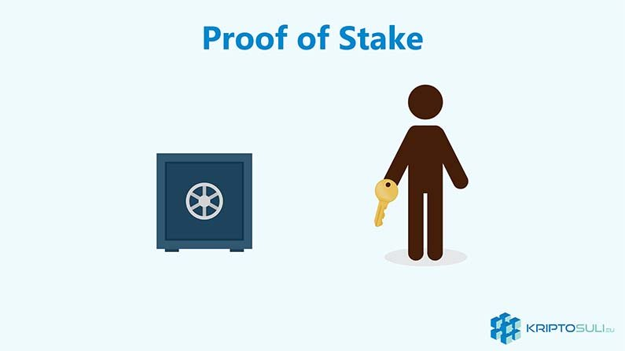

Mi a különbség Proof of Work (PoW) és Proof os Stake (PoS) között?

Ehhez a cikkhez szükséged lesz némi alapvető tudásra a Bitcoin-ról, Ethereum-ról, blokkláncról és kriptopénzekről.
Miért van szükség a megegyezési protokollokra?
Proof of Work (PoW) és Proof os Stake (PoS) megegyezési mechanizmus is ugyanazt a célt szolgálja mégpedig, hogy megegyezzenek a blokklánc állapotáról. Minden csomópont (node) egyet kell, hogy értsen a blokklánc állapotáról.
Minden blokkláncnak kell egy megegyezési mechanizmust választani amely kezeli a megegyezést a résztvevők között. Biztosítja, hogy a következő blokkja a blokkláncnak az egyetlen változata az igazságnak és megvédje a blokkláncot a támadásoktól. Ilyen támadás például egy DDoS támadások amelynek célja, hogy több hamis kérelem küldésével kimerítse a számítógépes erőforrásokat.
Proof of Work (PoW)
Eredetileg Proof of Work (PoW) koncepciójával Markus Jakobsson és Ari Juels állt elő egy 1999-ben közzétett dokumentumban.
Könnyebb érthetőség kedvéért Bitcoin-t használjuk példának. De az összes kriptopénz amit bányászattal állítanak elő hasonló elven működik.
Amikor egy új blokkot előállítanak, ezt hozzá kell fűzniük a blokklánchoz. Proof of Work esetében a bányászok bányásszák ezeket a blokkokat. Ez azt jelenti, hogy a bányászok összeállítják a tranzakciókat egy blokkba, ezután egy számot raknak a blokkhoz amelyet „nonce”-nak neveznek. Ezt a blokkot a „nonce” számmal együtt ezután egy SHA-256 hash algoritmussal kódolják.
Bitcoin-nál ezeknek a blokkoknak egy bizonyos számú nullával kell kezdődnie. Jelenlegi nehézségi szinten ez 17 darab nulla. Idővel ez a szám nőni fog mert a Bitcoin bányászat nehézségi szintje folyamatosan emelkedik. Miután a bányász lekódolta a hash algoritmussal a blokkot, megnézi, hogy 17 nullával kezdődik-e. Ha nem lecseréli a „nonce” számot és megismétli a hash kódolási folyamatot egészen addig amíg a hash szám 17 nullával kezdődik.
Ez a folyamatot több milliószor el kell végezni mire sikeresen megtalálja a korrekt „nonce” számot ami kiadja a megfelelő hash számot. Az első bányász aki sikeresen elvégzi ezt a folyamatot Bitcoin-al lesz jutalmazva. Jelenlegi blokk jutalom 12,5 BTC. Majd a blokkot hozzáadja a blokklánchoz és értesíti a többi bányászt, hogy ez a blokk kész.
Mivel a bányásznak ilyen sokszor meg kell ismételni a folyamatot mire sikeresen kibányászhatja a blokkot, ez rengeteg hardver kapacitásba és elektromos áramba kerül. Jelenleg Bitcoin bányászok elektromos áram használata teljes Dániáéval vetekszik.
Proof of Stake (PoS)
Proof of Stake (PoS) egy alternatív módja a blokk ellenőrzésének és érvényesítésének. Nem úgy mint a Proof of Work rendszerben ahol az algoritmus megjutalmazza a bányászokat akik megoldják a matematikai problémát., a Proof of Stake rendszerben az új blokk létrehozója egy véletlenszerű módon van kiválasztva a vagyonától függően, amelyet „stake”-nek hívnak. Ezt úgy lehet legkönnyebben elképzelni mint a részvényeket egy vállalatban.
Tehát ha valaki a teljes Ethereum készlet 1%-át tartja akkor 1% eséllyel hozhat létre új blokkot. A PoS rendszerben nincs blokk jutalom tehát a bányászok (akiket itt már „forgers”-nek azaz kovácsnak hívnak) tranzakciós díjakat zsebelik be.
Amiért szükség van nagy mennyiségű kriptopénz tárolására (Ethereum esetében 1250 ETH lesz), hogy érdekelt fél legyen valaki akárcsak egy vállalat részesedésével. Így mivel jelentős részesedése van ezeknek a részvényeseknek, kevésbé valószínű, hogy ártanának a hálózatnak, mert saját magukat károsítanák ha a hálózat megbízhatatlan lenne. Ezáltal a 51%-os támadás problémája is kiküszöbölésre kerül, mivel ha valaki megszerzi az ETH készlet 51%-át és ártani akarna a rendszernek akkor az gyakorlatilag csak saját magának ártana. És elképesztően drága lenne megszerezni az ETH készlet 51%-át.
Amíg PoW rendszerben a legnagyobb számítógépes teljesítménnyel rendelkező bányásznak fog legtöbbször sikerülni a blokk hozzáadása, addig PoS rendszerben a legnagyobb részvényesnek lesz a legnagyobb esélye új blokk generálásához.
Miért vált Ethereum PoS-re?
PoS rendszerben nem kell nagy számítógépes teljesítmény tehát az új blokk generálásának ára jelentősen csökken, amely sokkal hatékonyabbá teszi a rendszert. Valamint segít decentralizáltabbá tenni a hálózatot.
Az Ethereum közösség szerint a PoS mechanizmus rendszer segíteni fog a jelenlegi bővíthetőségi problémák megoldásában.
Ethereum PoS rendszerében amely Casper néven ismert, azt a személyt aki rossz tranzakciókat próbál érvényesíteni büntetés éri a berakott tőkéjének egy részének elvesztésével.
Valamikor 2018-ban fog megtörténni a váltás, először vegyes mechanizmussal, tehát csak minden 100. blokk lesz PoS.


2018. Január 20.